한국사능력검정시험-중급(폐지) (2012-08-18 기출문제)
1. 밑줄 그은‘이 시대’의 모습으로 가장 적절한 것은? [2점]
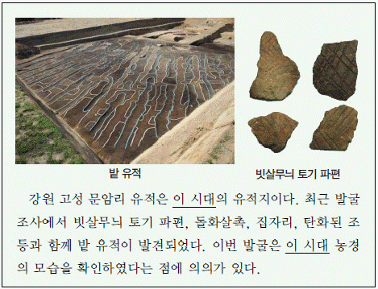
- 철제 농기구를 사용하였다.
- 가락바퀴와 뼈바늘을 사용하였다.
- 계급이 분화되고 사유 재산이 생겼다.
- 거푸집을 이용하여 도구를 제작하였다.
- 무덤으로는 널무덤과 독무덤이 만들어졌다.
(정답률: 92%)

2. (가)에 들어갈 내용으로 옳은 것은? [1점]
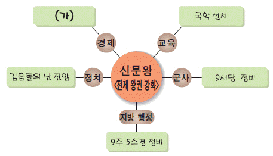
- 녹읍 부활
- 전시과 실시
- 동시전 설치
- 상평창 설치
- 관료전 지급
(정답률: 73%)
3. 교사의 질문에 대한 답변으로 옳은 것을 <보기>에서 고른 것은? [2점]
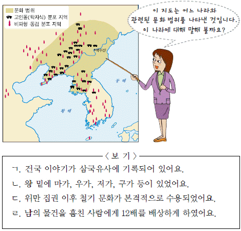
- ㄱ, ㄴ
- ㄱ, ㄷ
- ㄴ, ㄷ
- ㄴ, ㄹ
- ㄷ, ㄹ
(정답률: 63%)
4. 다음 규정이 시행되었던 나라에서 볼 수 있는 모습으로 적절한 것은? [1점]
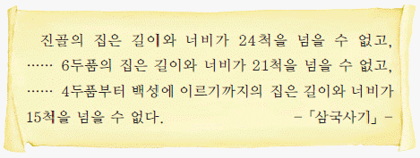
- 서옥에 들어가 사는 신랑
- 진대법 실시를 명하는 왕
- 정사암에서 회의하는 좌평
- 원광의 세속 5계를 배우는 화랑
- 동∙서 대비원에서 치료 받는 백성
(정답률: 70%)
5. (가), (나) 지역과 관련된 설명으로 옳은 것을 <보기>에서 고른 것은? [3점]
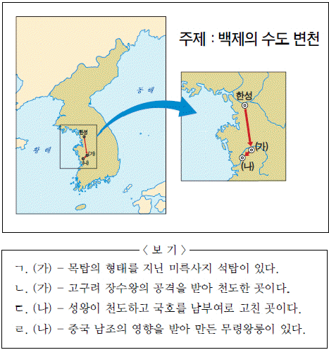
- ㄱ, ㄴ
- ㄱ, ㄷ
- ㄴ, ㄷ
- ㄴ, ㄹ
- ㄷ, ㄹ
(정답률: 67%)
6. 다음 전쟁이 일어난 시기를 연표에서 옳게 고른 것은? [2점]
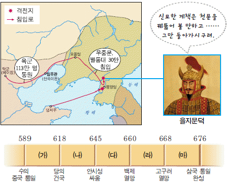
- (가)
- (나)
- (다)
- (라)
- (마)
(정답률: 51%)
7. 밑줄 그은 (ㄱ)의 근거가 될 수 있는 문화유산으로 적절한 것은? [3점]
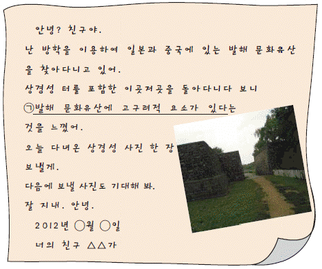
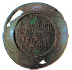
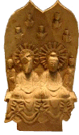
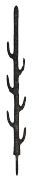
(정답률: 76%)
8. (가)에 들어갈 검색어로 옳은 것은? [2점]
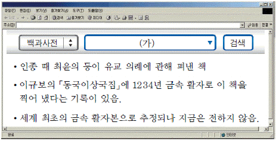
- 팔만대장경
- 삼강행실도
- 직지심체요절
- 상정고금예문
- 무구정광대다라니경
(정답률: 38%)
9. 다음 문화유산을 이용한 탐구 활동의 주제로 가장 적절한 것은? [2점]
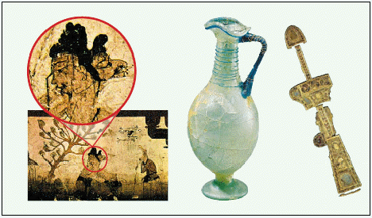
- 가야의 대외 교류
- 통일 신라의 무역 활동
- 발해와 통일 신라의 대외 관계
- 삼국 시대에 전래된 서역 문화
- 일본에 전해진 삼국의 불교문화
(정답률: 64%)
10. 지도에 표시된 사건이 일어난 시기를 연표에서 옳게 고른 것은? [2점]
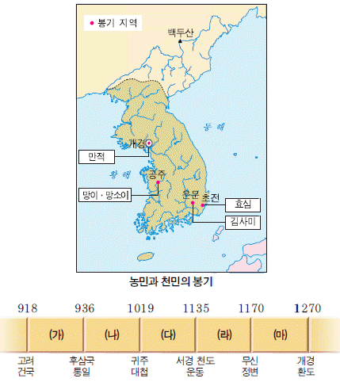
- (가)
- (나)
- (다)
- (라)
- (마)
(정답률: 77%)
11. 밑줄 그은‘이것’에 해당하는 문화유산으로 옳은 것은? [2점]
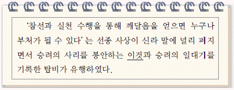
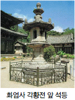
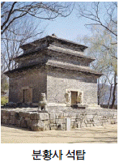
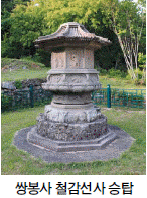
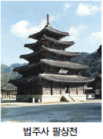
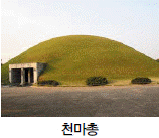
(정답률: 58%)
12. (가)에 들어갈 인물의 활동으로 옳은 것은? [2점]
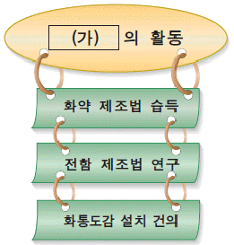
- 천리장성 축조
- 쓰시마 섬 정벌
- 요동 정벌 추진
- 진포에서 왜구 격퇴
- 두만강 지역에 6진 설치
(정답률: 76%)
13. 다음은 문화유산 카드의 앞뒷면이다. (가)에 들어갈 문화유산으로 옳은 것은? [2점]
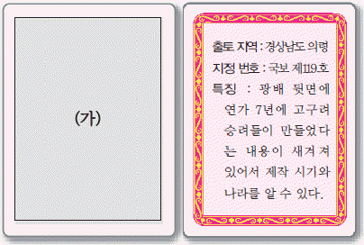
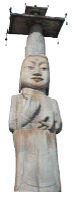
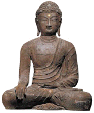
(정답률: 78%)
14. 교사의 질문에 대한 답변으로 적절한 것은? [3점]
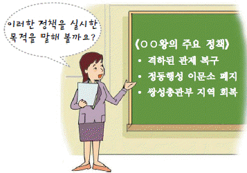
- 서경 천도를 추진하려고 했어요.
- 원의 간섭에서 벗어나려고 했어요.
- 백제의 옛 지역을 차지하려고 했어요.
- 유교를 통치 이념으로 삼으려고 했어요.
- 공신과 호족 세력을 약화시키려고 했어요.
(정답률: 83%)
15. (가)..(라)를 일어난 순서대로 옳게 나열한 것은? [2점]
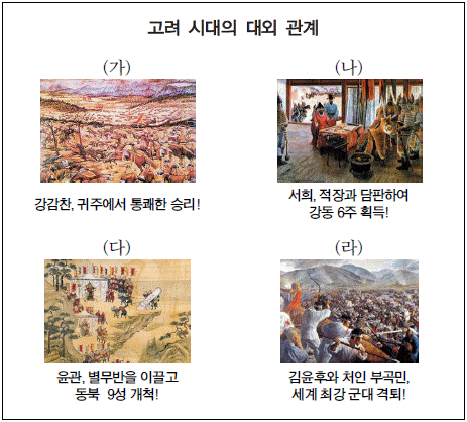
- (가) - (나) - (다) - (라)
- (가) - (나) - (라) - (다)
- (나) - (가) - (다) - (라)
- (나) - (라) - (다) - (가)
- (다) - (나) - (라) - (가)
(정답률: 66%)
16. 다음 가상 편지에 나타난 제도로 옳은 것은? [1점]
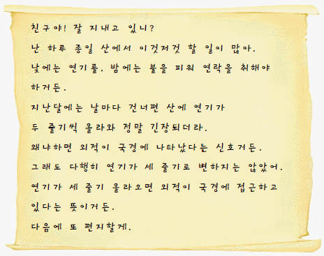
- 봉수 제도
- 역원 제도
- 조운 제도
- 호패 제도
- 기인 제도
(정답률: 87%)
17. (가)에 들어갈 대답으로 가장 적절한 것은? [2점]
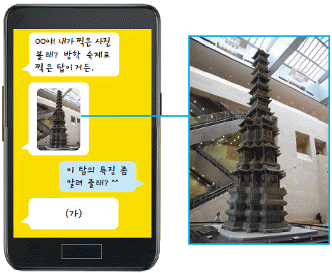
- 팔각 원당형으로 만든 탑이야.
- 현존하는 가장 오래된 백제 탑이야.
- 돌을 벽돌 모양으로 다듬어 쌓았어.
- 신라가 삼국을 통일한 직후에 만든 탑이야.
- 원의 영향을 받은 탑으로 대리석으로 만들었지.
(정답률: 65%)
18. 다음 자료에 나타난 정치 제도에 대한 설명으로 옳은 것을 <보기>에서 고른 것은? [2점]
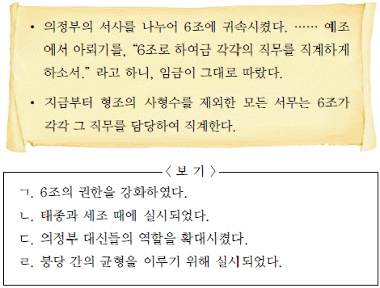
- ㄱ, ㄴ
- ㄱ, ㄷ
- ㄴ, ㄷ
- ㄴ, ㄹ
- ㄷ, ㄹ
(정답률: 61%)
19. 밑줄 그은‘이 섬’과 관련된 역사적 사실로 옳은 것은? [2점]
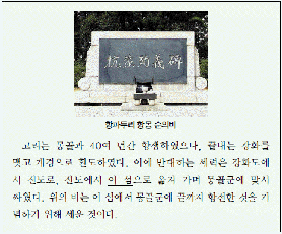
- 최초의 근대적 조약이 체결되었다.
- 원 간섭기에 탐라 총관부가 설치되었다.
- 장보고가 해상 무역 기지를 설치하였다.
- 이순신이 학익진으로 왜군을 크게 물리쳤다.
- 러시아 견제를 구실로 영국이 불법 점령하였다.
(정답률: 61%)
20. 다음 기구들이 처음 제작된 시기에 있었던 사실로 옳은 것은? [1점]
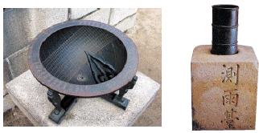
- 상감 기법의 청자가 유행하였다.
- 월정사 8각 9층 석탑이 세워졌다.
- 칠정산이라는 역법서가 편찬되었다.
- 토지 제도 개혁을 담은 반계수록이 저술되었다.
- 홍역에 대한 의학 서적인 마과회통이 간행되었다.
(정답률: 75%)
21. (가)에 대한 설명으로 옳은 것은? [3점]
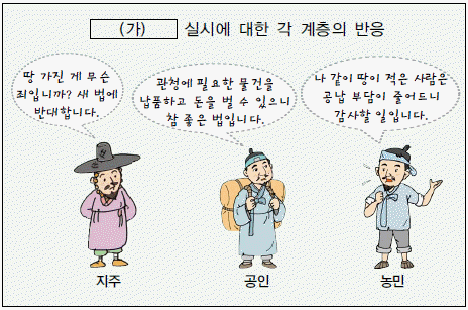
- 군역의 부담을 줄여 주기 위한 조치였다.
- 줄어든 재정 수입을 결작과 잡세로 보충하였다.
- 풍흉에 관계없이 1결당 미곡 4두를 수취하였다.
- 방납의 폐단을 막고 재정을 확보하기 위해 실시하였다.
- 일부 상류층에게 선무군관이라는 칭호를 주고 포를 징수하였다.
(정답률: 65%)
22. 그림과 같은 상황이 보편화된 시기의 사회 모습으로 가장 적절한 것은? [2점]
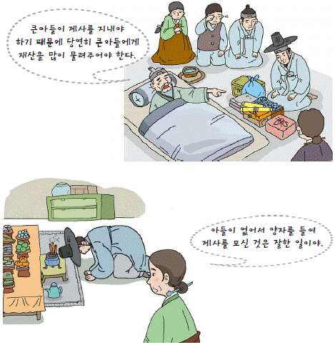
- 부계 중심의 족보가 널리 편찬되었다.
- 사위가 처가에서 생활하는 경우가 많았다.
- 여성의 이혼과 재가가 비교적 자유로웠다.
- 자녀는 태어난 순서대로 호적에 기재하였다.
- 음서의 혜택이 사위와 외손자에게도 주어졌다.
(정답률: 74%)
23. 교사의 질문에 대한 답변으로 옳은 것은? [2점]
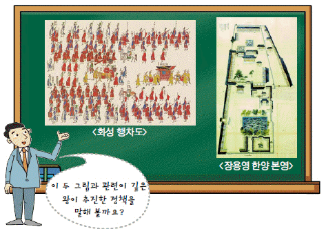
- 균역법을 제정했어요.
- 비변사를 혁파했어요.
- 대전회통을 편찬했어요.
- 신문고 제도를 부활했어요.
- 초계문신 제도를 실시했어요.
(정답률: 64%)
24. 그림을 통해 알 수 있는 시기를 연표에서 옳게 고른 것은? [2점]
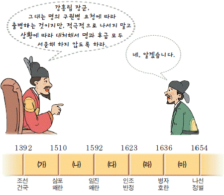
- (가)
- (나)
- (다)
- (라)
- (마)
(정답률: 61%)
25. 다음 자료와 같은 모습이 나타난 시기의 그림으로 적절한 것은? [2점]
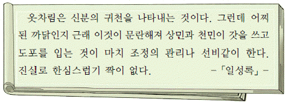
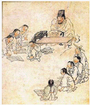
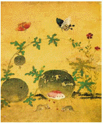
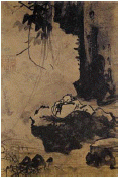
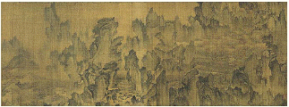
(정답률: 71%)
26. (가) 단체의 활동으로 옳은 것을 <보기>에서 고른 것은? [2점]
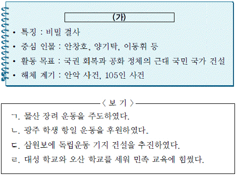
- ㄱ, ㄴ
- ㄱ, ㄷ
- ㄴ, ㄷ
- ㄴ, ㄹ
- ㄷ, ㄹ
(정답률: 66%)
27. 대화에 나타난 종교에 대한 설명으로 옳지 않은 것은? [2점]
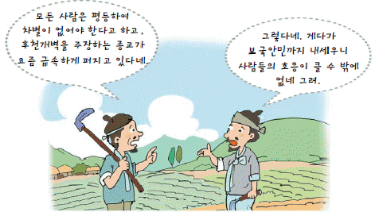
- 서양과 서학에 반대하였다.
- 조상에 대한 제사를 거부하였다.
- 몰락 양반인 최제우가 창시하였다.
- 교세가 확산되자 정부의 탄압을 받았다.
- 유.불.선과 민간 신앙의 요소가 포함되어 있다.
(정답률: 55%)
28. 다음 자료에 나타난 농업 기술의 확산이 끼친 영향으로 적절하지 않은 것은? [1점]
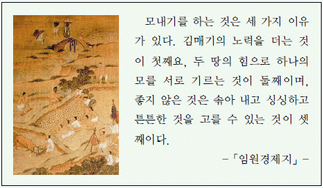
- 노동력이 절감되었다.
- 저수지가 증가하였다.
- 농민층이 분화되었다.
- 휴경법이 극복되었다.
- 이모작이 가능해졌다.
(정답률: 34%)
29. 밑줄 그은‘이들’로 옳은 것은? [1점]
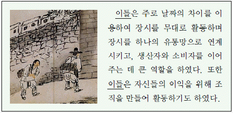
- 도고
- 객주
- 보부상
- 경강 상인
- 시전 상인
(정답률: 73%)
30. (가)..(마) 문화유산에 대한 설명으로 옳지 않은 것은? [3점]
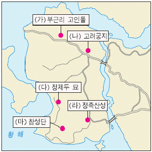
- (가) - 유네스코 세계 문화유산이다.
- (나) - 몽골 침략 때 천도하여 세운 궁궐의 터이다.
- (다) - 북학파를 대표하는 인물의 무덤이다.
- (라) - 병인양요 때 프랑스군을 물리친 곳이다.
- (마) - 단군이 하늘에 제사를 지냈다고 전해지는 곳이다.
(정답률: 44%)
31. (가)에 들어갈 내용으로 옳지 않은 것은? [2점]
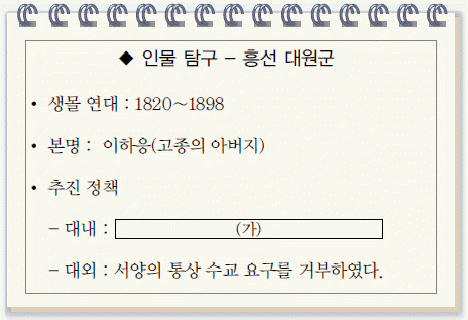
- 의정부와 삼군부의 기능을 부활시켰다.
- 양전 사업을 실시하고 지계를 발급하였다.
- 왕실의 권위를 세우기 위해 경복궁을 중건하였다.
- 양반에게도 군포를 부과하는 호포제를 실시하였다.
- 환곡의 폐단을 개선하기 위해 사창제를 실시하였다.
(정답률: 54%)
32. 다음 조약의 체결 배경으로 가장 적절한 것은? [2점]
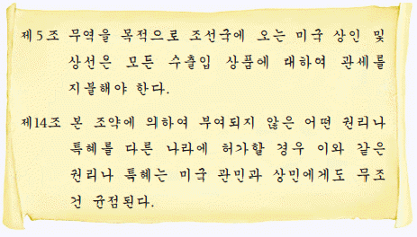
- 병인박해와 병인양요 발생
- 조선책략 유포와 청의 알선
- 아관 파천과 열강의 이권 침탈
- 러시아의 남하 정책과 삼국 간섭
- 정한론 대두와 운요호 사건 발생
(정답률: 44%)
33. (가)에 들어갈 내용으로 적절한 것은? [3점]
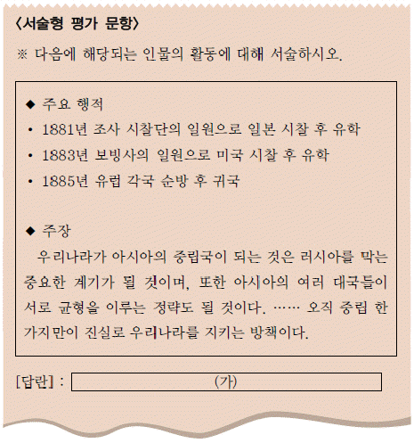
- 서구 기행문인 서유견문을 저술하였다.
- 갑신정변의 실패로 일본에 망명하였다.
- 미국에서 귀국하여 독립 협회를 창립하였다.
- 초대 주미 공사로 임명되어 미국에 파견되었다.
- 학생과 기술자를 이끌고 영선사로 청에 다녀왔다.
(정답률: 35%)
34. 다음 퀴즈에 대한 답으로 옳은 것은? [2점]
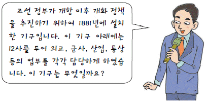
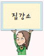
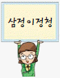
(정답률: 71%)
35. (가)에 들어갈 도시를 지도에서 옳게 고른 것은? [2점]
- (ㄱ)
- (ㄴ)
- (ㄷ)
- (ㄹ)
- (ㅁ)
(정답률: 63%)
36. 다음 자료의 민족 운동이 추구한 목표로 옳은 것은? [1점]
- 국민 성금을 모아 외환 위기를 극복하고자 하였다.
- 국민의 힘으로 국채를 갚아 국권을 수호하고자 하였다.
- 전국적인 모금 운동을 전개하여 대학을 설립하고자 하였다.
- 농광회사를 설립하여 일본의 토지 약탈을 저지하려 하였다.
- 대한민국 임시 정부의 활동에 필요한 자금을 마련하고자 하였다.
(정답률: 73%)
37. 대화에 나타난 학교에 대한 설명으로 옳은 것은? [3점]
- 갑오개혁기에 세워졌다.
- 최초의 여성 교육 기관이다.
- 기독교 선교를 목적으로 세워졌다.
- 현직 관료와 상류층의 자제를 가르쳤다.
- 학생들에게 근대 학문과 무술을 가르쳤다.
(정답률: 53%)
38. 다음 자료에서 설명하고 있는 신문으로 옳은 것은? [1점]
(정답률: 60%)
39. (가)..(마)에 대한 설명으로 옳지 않은 것은? [2점]
- (가) - 서양식 무기를 제조한 기관이다.
- (나) - 최초의 근대식 병원이다.
- (다) - 최초로 설립된 민간 은행이다.
- (라) - 한성순보를 발행한 기관이다.
- (마) - 화폐를 주조하던 기관이다.
(정답률: 72%)
40. 다음 상황이 나타난 시기에 있었던 일제의 식민 정책으로 옳은 것은? [2점]
- 치안 유지법을 제정하였다.
- 남면북양 정책을 추진하였다.
- 헌병 경찰 제도를 실시하였다.
- 조선일보, 동아일보를 폐간하였다.
- 미곡을 공출하고 식량을 배급하였다
(정답률: 75%)
41. 다음 신문 기사를 통해 알 수 있는 사건이 끼친 영향으로 옳은 것은? [3점]
- 상하이에서 국민 대표 회의 개최
- 김원봉, 윤세주 등의 의열단 결성
- 일본군의 보복으로 간도 참변 발생
- 참의부, 정의부, 신민부의 통합 추진
- 중국 국민당 정부의 대한민국 임시 정부 지원
(정답률: 66%)
42. 밑줄 그은 (ㄱ), (ㄴ) 인물에 대한 설명으로 옳은 것을 <보기>에서 고른 것은? [3점]
- ㄱ, ㄴ
- ㄱ, ㄷ
- ㄴ, ㄷ
- ㄴ, ㄹ
- ㄷ, ㄹ
(정답률: 66%)
43. 다음은 어느 운동과 관련된 가상의 안내장이다. 이 운동에 대한 설명으로 옳은 것은? [2점]
- 송죽회의 후원을 받았다.
- 방정환, 조철호 등이 주도하였다.
- 우리말 큰사전 편찬 사업을 추진하였다.
- ‘내 살림 내것으로’라는 구호를 내세웠다.
- 근우를 발행하여 여성의 권익을 옹호하였다.
(정답률: 82%)
44. (가)에 들어갈 사진으로 가장 적절한 것은? [2점]
(정답률: 64%)
45. 다음 자료를 통해 알 수 있는 민족 운동에 대한 설명으로 옳은 것은? [3점]
- 성진회, 독서회 등의 단체가 주도하였다.
- 순종의 장례일에 학생들의 주도로 일어났다.
- 민족 유일당 운동을 추진하는 배경이 되었다.
- 대한민국 임시 정부가 수립되는 계기가 되었다.
- 한국인 학생과 일본인 학생 간의 충돌에서 비롯되었다.
(정답률: 57%)
46. (가) 사건이 전개되던 시기에 있었던 사실로 옳지 않은 것은? [2점]
- 이승만 정부는 반공 포로를 석방하였다.
- 나이 어린 학도병들이 국군과 함께 싸웠다.
- 국군과 유엔군은 인천 상륙 작전에 성공하였다.
- 중국군의 참전으로 서울을 다시 빼앗기게 되었다.
- 김구, 김규식 등은 북한에 남북 협상을 제의하였다.
(정답률: 54%)
47. 밑줄 그은‘이 운동’에 대한 설명으로 옳은 것은? [2점]
- 한.일 국교 정상화에 반대하였다.
- 3.15 부정 선거가 직접적인 원인이었다.
- 유신 철폐를 요구하며 부산과 마산에서 일어났다.
- 신군부의 계엄령 확대에 반발하여 광주에서 시작되었다.
- 대통령 직선제 개헌을 담은 6.29 민주화 선언을 이끌어 냈다.
(정답률: 69%)
48. 다음 신문 기사를 통해 알 수 있는 시기의 모습으로 가장 적절한 것은? [1점]
- 베트남으로 파병되는 국군
- 정부 수립을 준비하는 제헌 국회 의원
- 경부 고속 국도 개통식을 취재하는 기자
- 100억 불 수출 기념식에 참가하는 기업가
- 경제 개발 5개년 계획을 세우는 장면 내각
(정답률: 34%)
49. 다음 자료에서 설명하는 인물로 옳은 것은? [1점]
- 전형필
- 박은식
- 신채호
- 주시경
- 최현배
(정답률: 48%)
50. (가)에 들어갈 내용으로 옳은 것은? [2점]
- 남북한 동시 유엔 가입
- 7.4 남북 공동 성명 발표
- 6.15 남북 공동 선언 발표
- 최초로 이산가족 고향 방문단의 상봉
- 한반도 에너지 개발 기구(KEDO) 구성
(정답률: 46%)